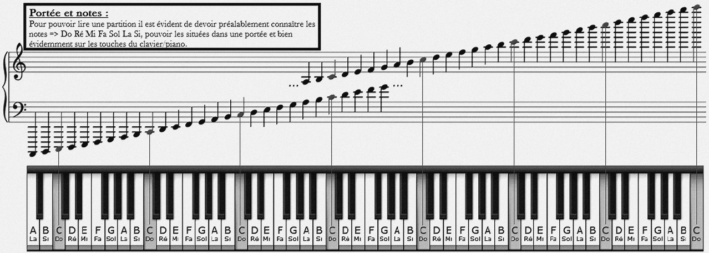
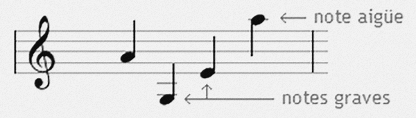
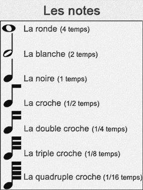
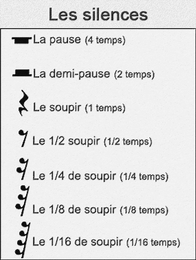
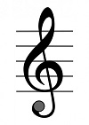
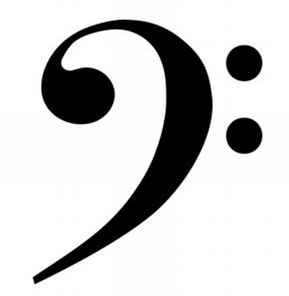
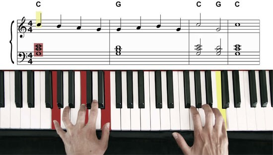
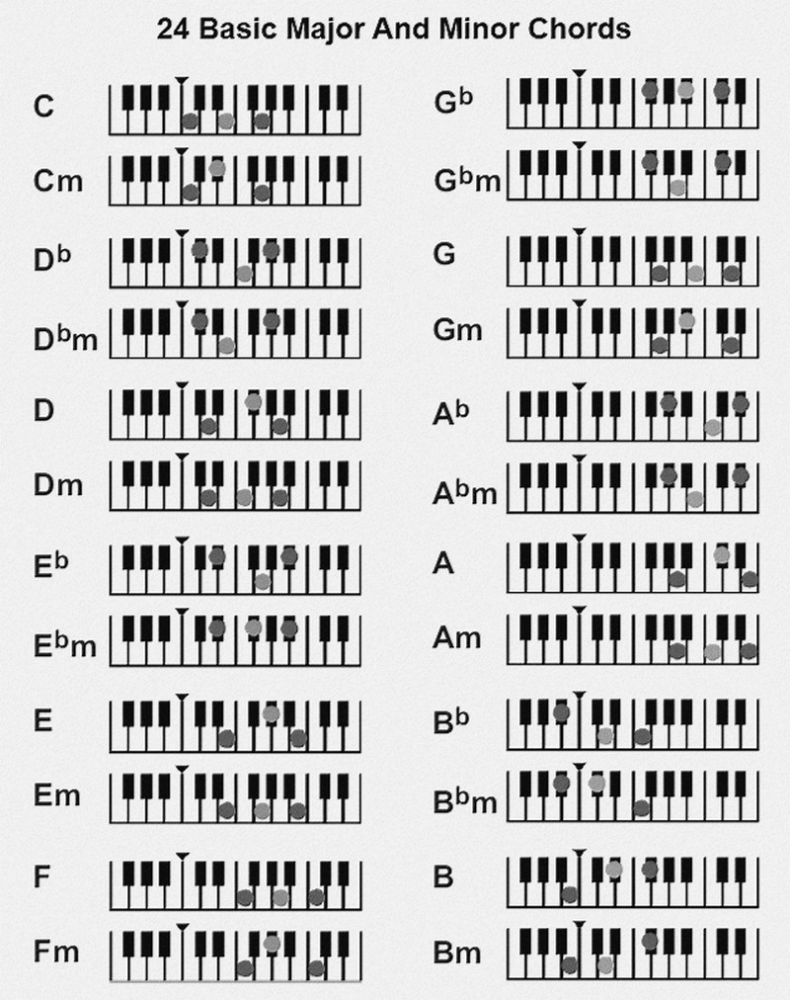

Leçon 1: Posture
Le positionnement du corps et des mains est primordial, de manière à éviter:
- Les douleurs de dos
- Les contractions musculaires des mains
- Ou encore une déformation de la colone vertebral...
Leçon 2: Solfège
Commençons maintenant par les bases, les notes (DO RE MI FA SOL LA SI) et leurs correspondances international: C D E F G A B (utilisé plus souvent lorsqu'il s'agit d'accords, ces derniers que nous verront plus bas). De plus à savoir, une mesure est délimité comme nous le voyons cissous par un trait vertical, et est constitué de 4 temps.
L'image qui suit permet d'avantage de voir ce qu'est une mesure, et la gradation des notes graves aux notes aigüs.
En plus de correspondre à une sonorité, toutes notes à un temps donner. (1 temps = 1 seconde) :
 Voici ci-dessous la clé de sol (image1) et la clé de fa (image2). La clé de Sol est dans une porté au niveau supérieur gauche, les notes qui seront ajoutées sur toute sa longeur seront celles jouer par la main droite. Ainsi la clé de Fa situé en dessous de la clé de Sol située également à gauche, correspond aux notes jouées par la main gauche.
 L'image suivante vous permez une fois avoir pris connaissances des informations ci-dessus, d'appréhender la coordination entre théorie (partitions) et pratique (piano). 
Leçon 3: Accords
Vient à présent le moment d'apprendre les accords, ces derniers étant particulièrement utiles lorsque vous souhaitez jouer un morceaux de musique Pop-rock, rock, soul, etc... Il suffit d'écouter le morceaux et de trouver la sonorité qui convient. La plupart des morceaux étant à base de 3 voir 4 accords principaux, largement suffisant pour jouer le morceaux souhaité.
Leçon 4: Partitions débutants
Pour la partition, c'est par ici ! => Pachelbel: Cannon en Ré
Pour la partition, c'est par ici ! => Beethoven: Für Elise
Pour la partition, c'est par ici ! => Ed Sheeran: The a team
Pour la partition, c'est par ici ! => Birdy: Skinny love
Pour la partition, c'est par ici ! => Passenger: Let her go
Pour la partition, c'est par ici ! => Jessie-J: Who you are
Pour la partition, c'est par ici ! => Ellie Goulding: Your song